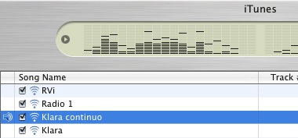

Digitale radio volgens de VRT
woensdag 3 november 2004 | Internet
De VRT biedt sinds gisteren vernieuwde 'streams' aan van haar radionetten, allemaal mooi gebundeld op digitaleradio.be. Meer info vind je verder bij Luc, die Stijn Lehaen, de projectingenieur radio bij de VRT, kon strikken voor een interview.
Op Windows kan je alle zenders beluisteren via een speciaal vormgegeven VRT-speler (eigenlijk een 'skin' rond Microsoft's Mediaplayer). Wie echter een beetje van esthetiek op zijn desktop houdt, gruwelt bij de eerste aanblik van de interface: hoe onwaarschijnlijk lelijk! Ik zou beschaamd zijn met zo'n ding op mijn scherm mocht er onverwachts volk over de vloer komen. Als ik hip wil zijn, koop ik wel een skateboard, dank u.


De positieve kant van het verhaal is dat de vernieuwde streams in MP3 aangeboden worden — een open formaat — waardoor ze in principe met élke mediaspeler op élk besturingssysteem af te spelen zijn. Erg lovenswaardig van de VRT! Nuja, het is niet voor niets een openbare omroep. Ik heb de livestreams in ieder geval reeds een plekje gegeven in iTunes op Mac OS X.
Handig om weten: een uurtje luisteren aan hoge kwaliteit (64kbps) kost je een kleine 30 Mb aan dataverkeer per uur (dat is 750 Mb per dag!). Je speler misschien toch beter uitzetten als je op vakantie vertrekt ;-)

Ben op 4 november 2004
> De positieve kant van het verhaal is dat de vernieuwde
> streams in MP3 aangeboden worden — een open
> formaat
Foutje: Fraunhöfer heeft een patent op MP3. MP3 is dus zeker geen open formaat (in tegenstelling tot wat iedereen denkt).
Een formaat dat wel open is, en veel beter dan MP3 (dat verouderd is), is Ogg Vorbis. Ik weet het, de naam lijkt op niets, maar de kwaliteit is veel hoger bij een lagere bitrate. Het toeval wilt dat ik net een klein stukje geschreven heb over streaming radio met Ogg Vorbis (http://bytewarrior.madoka.b...).